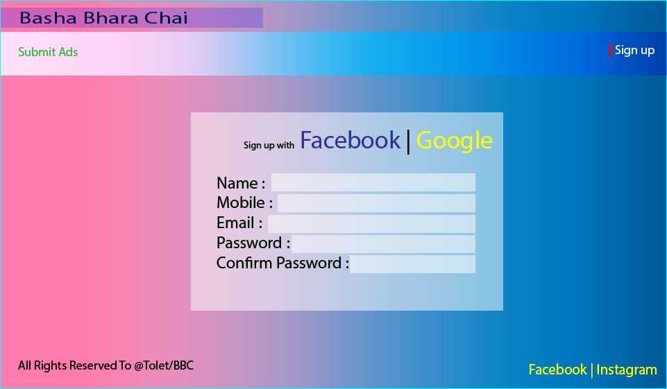
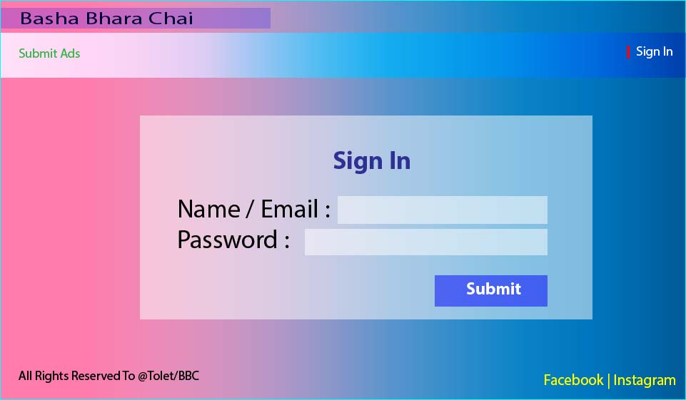
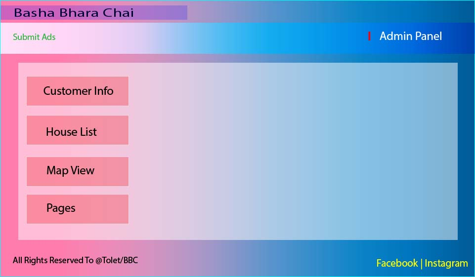
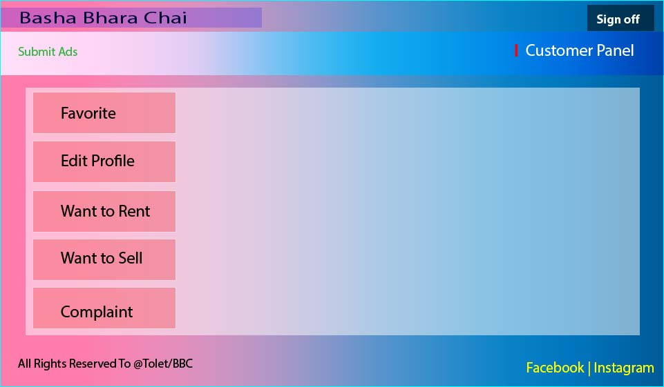

3. External Interface Requirements
- 3.1 User Interface
To-let is a web based application which will also run in android devices. For this application, we
make some images with the help of adobe illustrator to show the Tolet's User Interfaces based on our initial work, use case diagram and working flow diagram.
To-let's user interfaces given below:
(1) To-let's home page.
(2) To-let's sign up page.

(3) To-let's sign in page.

(4) To-let's admin panel

(5) To-let's customer panel

- 3.2 Software Interfaces
To store the rentable/sellable houses details, we will need a database system. For To-let, we will be use a relational database system with XAMPP's mysql, php. We will be use lots of APIs for web scrapping, goople map integration etc. We will be generated new house details by web scrapping. The user will be submit their user info through the sign up form, which will help the user to give ads on To-let. The software interface is mainly divided into 3 parts- home page with search facilities, user panel and list of houses page.
- 3.3 Hardware Interfaces
To-let application is going to run over the internet, all the hardware will be require to connect internet connection will be hardware interface for this application.
It is also work on mobile devices and uses AR and VR APIs.
So, for To-let: Modem, Ethernet Cross-Cable, WAN/LAN etc are required hardare as well GPS, gyroscope etc.
- 3.4 Communications Interfaces
To-let home rental solution may use the HTTP/HTTPS protocol for communication over the internet.